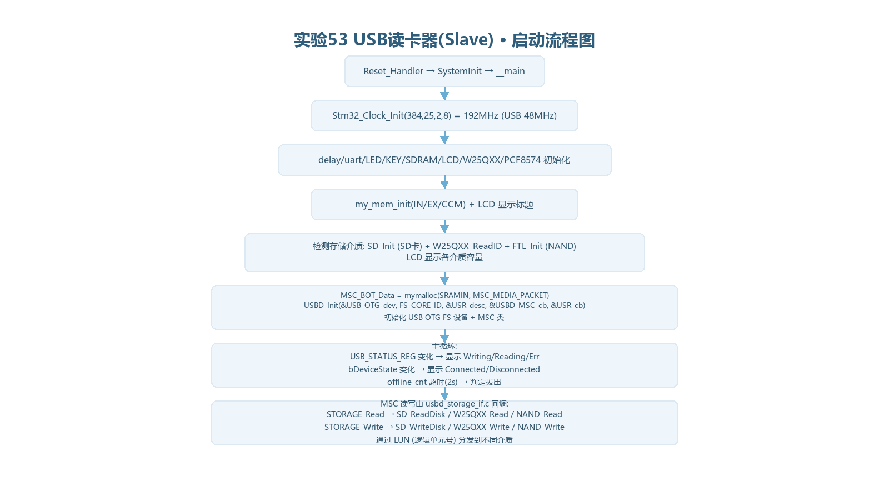
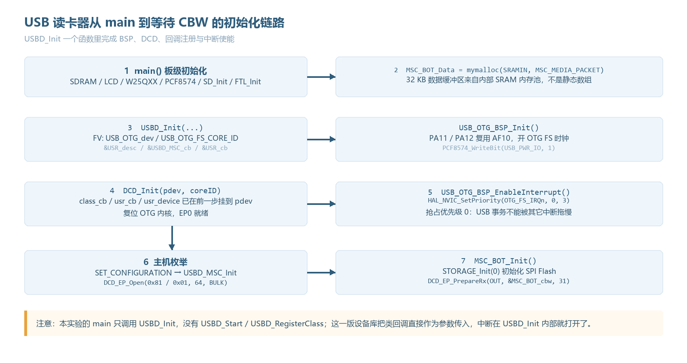
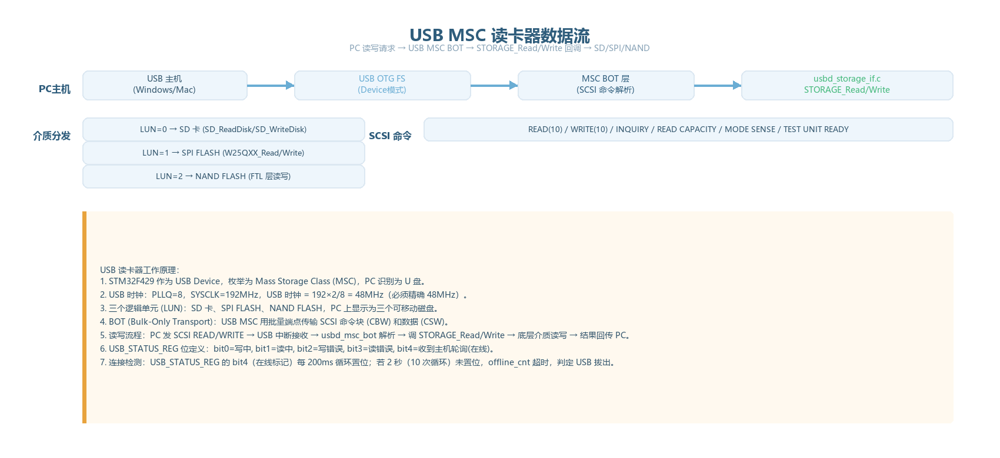
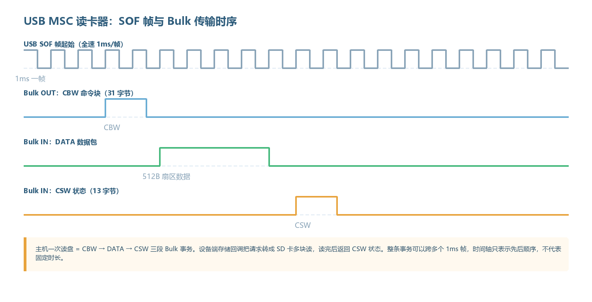
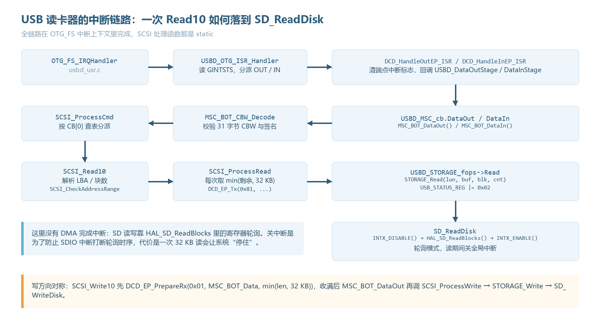

01 实验目标与系统角色
实验53 把 STM32F429 配置成 USB 大容量存储设备（Mass Storage Class，MSC）。插上 USB 线后，电脑不会把它识别成串口或调试器，而是识别成可移动磁盘：LUN0 是板载 SPI Flash 的前 25 MB，LUN1 是 NAND Flash，LUN2 是 SD 卡。电脑发出的每个读扇区、写扇区命令，最终都由 usbd_storage_msd.c 翻译成 W25QXX_Read、FTL_ReadSectors 或 SD_ReadDisk。
与实验52 的串口 IAP 不同，本实验没有“接收缓冲区”和“跳转”概念，主循环只做两件事：刷新 LCD 上的 USB 状态，以及用心跳计数判断 USB 是否还插着。真正的数据搬运全部发生在 OTG_FS 中断里。
| 逻辑单元 | 后端介质 | 容量来源 | 读写函数 |
|---|---|---|---|
| LUN0 | SPI Flash（W25Q256） | 固定 25 MB | W25QXX_Read / W25QXX_Write |
| LUN1 | NAND Flash（FTL 层） | valid_blocknum × block_pagenum × page_mainsize | FTL_ReadSectors / FTL_WriteSectors |
| LUN2 | SD 卡（SDIO） | SDCardInfo.CardCapacity | SD_ReadDisk / SD_WriteDisk |
| 主控 | STM32F429 | — | OTG FS，全速 12 Mbps |
| 系统时钟 | HSE 25 MHz | 192 MHz | Stm32_Clock_Init(384,25,2,8) |
int main(void)
{
u8 offline_cnt=0;
u8 tct=0;
u8 USB_STA;
u8 Divece_STA;
Stm32_Clock_Init(384,25,2,8); // 192 MHz，PLLQ=8 得 48 MHz 给 USB
delay_init(192); // fac_us = 192
uart_init(115200);
LED_Init();
KEY_Init();
SDRAM_Init(); // LCD 显存放在外部 SDRAM
LCD_Init();
W25QXX_Init(); // LUN0 的介质
PCF8574_Init(); // USB 电源控制脚在这颗 IO 扩展上
my_mem_init(SRAMIN); // 内部 SRAM 内存池
my_mem_init(SRAMEX);
my_mem_init(SRAMCCM);
if(SD_Init()) LCD_ShowString(30,130,200,16,16,"SD Card Error!");
if(W25QXX_ReadID()!=W25Q256) LCD_ShowString(30,130,200,16,16,"W25Q128 Error!");
if(FTL_Init()) LCD_ShowString(30,170,200,16,16,"NAND Error!");
MSC_BOT_Data=mymalloc(SRAMIN,MSC_MEDIA_PACKET); // 32 KB 传输缓冲
USBD_Init(&USB_OTG_dev,USB_OTG_FS_CORE_ID,&USR_desc,&USBD_MSC_cb,&USR_cb);
delay_ms(1800); // 等主机完成枚举
}
STORAGE_GetMaxLun 返回 1，电脑只能看到两个盘；这就是源码里 return STORAGE_LUN_NBR-1 与 return STORAGE_LUN_NBR-2 两个分支的实际含义。02 目录与文件分工
| 文件 | 层次 | 关键符号 |
|---|---|---|
USER/main.c | 应用 | USB_STATUS_REG、offline_cnt、MSC_BOT_Data |
USB/USB_APP/usbd_desc.c | 设备描述符 | USBD_DeviceDesc、USR_desc、Get_SerialNum |
USB/USB_APP/usbd_conf.h | 编译期配置 | MSC_IN_EP 0x81、MSC_OUT_EP 0x01、MSC_MEDIA_PACKET |
USB/USB_APP/usb_bsp.c | 板级 | USB_OTG_BSP_Init、USB_OTG_BSP_EnableInterrupt |
USB/USB_APP/usbd_usr.c | 用户回调 | OTG_FS_IRQHandler、USR_cb |
USB/USB_APP/usbd_storage_msd.c | 存储后端 | USBD_STORAGE_fops、STORAGE_Read |
Class/msc/usbd_msc_core.c | 类核心 | USBD_MSC_Setup、USBD_MSC_CfgDesc |
Class/msc/usbd_msc_bot.c | 传输协议 | MSC_BOT_CBW_Decode、MSC_BOT_SendCSW |
Class/msc/usbd_msc_scsi.c | 命令层 | SCSI_Read10、SCSI_Write10、SCSI_ProcessRead |
HARDWARE/SDIO/sdio_sdcard.c | 介质驱动 | SD_ReadDisk、SD_WriteDisk |
CORE/startup_stm32f429xx.s | 启动 | __initial_sp、OTG_FS_IRQHandler 向量 |
读这份工程时不要从 main.c 直接跳到 SCSI：中间隔着 USB 设备库。正确的顺序是 USBD_Init → 主机枚举 → USBD_MSC_Init → MSC_BOT_Init → CBW → SCSI_ProcessCmd → STORAGE_Read。每一层只认识下一层的接口，跨层读会看不懂参数从哪来。
工程里同时存在 USB Host 库、CDC、HID、DFU 等大量未参与编译的源码。判断“哪些代码真的在跑”，最可靠的方法是看 Keil 工程的文件列表，而不是看目录里有什么。
03 启动流程总览

启动顺序体现了一个取舍：LCD、SDRAM、SPI Flash、NAND、SD 卡全部在 USB 初始化之前完成。这样当主机开始枚举时，三个逻辑单元的介质已经可用，SCSI_TestUnitReady 与 SCSI_ReadCapacity10 能立即返回正确结果，不会出现“盘符出来了但容量是 0”的情况。
HAL_Init(); // 时基 + NVIC 分组 + Cache Stm32_Clock_Init(384,25,2,8); // 192 MHz / USB 48 MHz delay_init(192); uart_init(115200); LED_Init(); KEY_Init(); SDRAM_Init(); // LCD 显存依赖外部 SDRAM LCD_Init(); W25QXX_Init(); // LUN0 PCF8574_Init(); // USB 电源开关 my_mem_init(SRAMIN); my_mem_init(SRAMEX); my_mem_init(SRAMCCM); LCD_ShowString(30,50,200,16,16,"Apollo STM32F4/F7"); LCD_ShowString(30,70,200,16,16,"USB Card Reader TEST"); LCD_ShowString(30,190,200,16,16,"USB Connecting..."); MSC_BOT_Data=mymalloc(SRAMIN,MSC_MEDIA_PACKET); // 32 KB USBD_Init(&USB_OTG_dev,USB_OTG_FS_CORE_ID,&USR_desc,&USBD_MSC_cb,&USR_cb); delay_ms(1800); // 给主机枚举留时间 while(1) { delay_ms(1); // 主循环节拍 1 ms // 只刷新 LCD 与心跳，不参与数据搬运 }
- 为什么先初始化介质：主机枚举后会立刻发
INQUIRY与READ CAPACITY；如果这时 SD 卡还没初始化，返回的容量就是 0，Windows 可能直接把盘标成“需要格式化”。 - 32 KB 缓冲区为什么放 SRAMIN：
MSC_MEDIA_PACKET定义为32*1024，一次 SCSI 读写最多搬 32 KB。放在内部 SRAM 可以避免外部 SDRAM 与 LCD 扫描争带宽。 - delay_ms(1800) 不是协议要求：它只是给主机枚举和用户看提示留时间；去掉也能工作，但插拔瞬间的状态显示会不完整。
- 主循环不做 USB 事务：所有 CBW/CSW 与数据搬运都在
OTG_FS_IRQHandler里完成，主循环只读USB_STATUS_REG这个“状态信箱”。 - 没有 USBD_Start：这一版设备库在
USBD_Init末尾直接调用USB_OTG_BSP_EnableInterrupt，与新版 HAL 库的“Init + Start”两步式不同。
04 启动文件与向量表
启动文件仍然是 CORE/startup_stm32f429xx.s。它定义栈、堆、向量表与 Reset_Handler；其中 OTG_FS_IRQHandler 的入口地址被固定在向量表偏移 0x3C（中断号 67）。只要 stm32f4xx_it.c 或 usbd_usr.c 提供了同名函数，链接器就会把向量填成实际地址。
Stack_Size EQU 0x00000400 // 主栈 1 KB AREA STACK, NOINIT, READWRITE, ALIGN=3 __initial_sp Heap_Size EQU 0x00000200 // 堆 512 B AREA HEAP, NOINIT, READWRITE, ALIGN=3 __heap_base AREA RESET, DATA, READONLY EXPORT __Vectors __Vectors DCD __initial_sp // 0x08000000：初始 MSP DCD Reset_Handler // 0x08000004：复位入口 DCD NMI_Handler DCD HardFault_Handler // … DCD OTG_FS_IRQHandler // 中断号 67
本工程的向量表没有偏移：SystemInit 里 VECT_TAB_OFFSET 为 0，所以 SCB->VTOR = FLASH_BASE。这一点与实验52 的 Bootloader 相同，但与“APP 必须改 VTOR”的场景不同——这里没有第二个固件。
- OTG_FS 与 OTG_HS 是两个不同中断：本实验用
USB_OTG_FS_CORE_ID，对应OTG_FS_IRQHandler；如果误用 HS 内核，中断永远不会进来。 - 同名函数只能有一个：
OTG_FS_IRQHandler定义在usbd_usr.c里，stm32f4xx_it.c中不能再定义一次，否则链接报重复符号。 - 栈大小与 USB 无关：USB 事务用的是静态变量与 32 KB 堆缓冲，不占主栈；1 KB 栈足够，但中断嵌套深时仍要留余量。
- 堆只有 512 B：真正的大缓冲由
mymalloc从自定义内存池分配，不经过malloc的 512 B 堆。
05 SystemInit 与 HAL_Init
SystemInit 在 Reset_Handler 里被调用，职责是打开 FPU、把 RCC 恢复到复位默认值、设置向量表。它不配置 PLL，所以从它返回时系统还跑在 HSI 16 MHz。随后 main 先调 HAL_Init，再调 Stm32_Clock_Init 把主频抬到 192 MHz。
void SystemInit(void)
{
#if (__FPU_PRESENT == 1) && (__FPU_USED == 1)
SCB->CPACR |= ((3UL << 10*2)|(3UL << 11*2)); // CP10/CP11 全访问
#endif
RCC->CR |= (uint32_t)0x00000001; // 打开 HSION
RCC->CFGR = 0x00000000; // 清时钟配置
RCC->CR &= (uint32_t)0xFEF6FFFF; // 关 HSEON/CSSON/PLLON
RCC->PLLCFGR = 0x24003010;
RCC->CIR = 0x00000000;
SCB->VTOR = FLASH_BASE | VECT_TAB_OFFSET; // 向量表在 0x08000000
}
HAL_Init 做三件与本实验直接相关的事：打开 Flash 预取与 I/D Cache（192 MHz 下必须开，否则取指等待会拖慢 USB 中断响应）；把 NVIC 优先级分组设为 NVIC_PRIORITYGROUP_2（2 位抢占、2 位子优先级）；用 SysTick 建立 1 ms 时基，TICK_INT_PRIORITY 为 0x0F。
- 分组 2 决定了“抢占 0 / 子 3”的含义：
HAL_NVIC_SetPriority(OTG_FS_IRQn,0,3)中 0 是抢占优先级，3 是子优先级；USB 可以打断几乎所有其它中断。 - SysTick 优先级最低：0x0F 意味着 SysTick 可以被 USB 中断打断，
HAL_Delay的计时不会影响 USB 事务。 - Cache 与 USB 缓冲：F429 的 D-Cache 对 SRAM 生效；USB 端点缓冲由 OTG 外设直接访问，本工程未使用需要手动清理 Cache 的 DMA 描述符场景。
- OverDrive 必须开：192 MHz 超过 180 MHz，
HAL_PWREx_EnableOverDrive不成功会停在while(1)，表现为“上电就死”，与 USB 无关。
06 192 MHz 时钟树与延时
Stm32_Clock_Init(384,25,2,8) 的四个参数依次是 PLLN、PLLM、PLLP、PLLQ。HSE 为 25 MHz，先除 PLLM 得到 1 MHz 比较频率，再乘 PLLN 得到 384 MHz VCO，除 PLLP=2 得到 192 MHz 系统时钟，除 PLLQ=8 得到 48 MHz 供 USB 与 SDIO 使用。
| 节点 | 计算 | 结果 | 用途 |
|---|---|---|---|
| HSE | 晶振 | 25 MHz | PLL 输入 |
| PLL 输入 | 25 / PLLM(25) | 1 MHz | VCO 参考 |
| VCO | 1 × PLLN(384) | 384 MHz | PLL 输出 |
| SYSCLK | 384 / PLLP(2) | 192 MHz | AHB 时钟 |
| PLLQ | 384 / 8 | 48 MHz | USB OTG FS、SDIO |
| HCLK | SYSCLK / 1 | 192 MHz | 内核、SRAM、DMA |
| PCLK1 | HCLK / 4 | 48 MHz | APB1 外设 |
| PCLK2 | HCLK / 2 | 96 MHz | APB2 外设 |
RCC_OscInitStructure.PLL.PLLM = pllm; // 25 RCC_OscInitStructure.PLL.PLLN = plln; // 384 RCC_OscInitStructure.PLL.PLLP = pllp; // 2 → 192 MHz RCC_OscInitStructure.PLL.PLLQ = pllq; // 8 → 48 MHz HAL_RCC_OscConfig(&RCC_OscInitStructure); HAL_PWREx_EnableOverDrive(); // 180 MHz 以上必须开 RCC_ClkInitStructure.AHBCLKDivider = RCC_SYSCLK_DIV1; RCC_ClkInitStructure.APB1CLKDivider = RCC_HCLK_DIV4; RCC_ClkInitStructure.APB2CLKDivider = RCC_HCLK_DIV2; HAL_RCC_ClockConfig(&RCC_ClkInitStructure, FLASH_LATENCY_5);
delay_init(192) 把 fac_us 设为 192，之后 delay_us 通过读 SysTick->VAL 与 SysTick->LOAD 做轮询延时，不依赖 SysTick 中断。USB BSP 的 USB_OTG_BSP_uDelay / mDelay 直接转调这两个函数。
- 为什么必须 48 MHz：USB 全速要求时钟精度优于 ±0.25%。PLLQ 只能是整数分频，25 MHz 晶振下能整除出 48 MHz 的组合就是 PLLM=25、PLLN=384、PLLQ=8。
- 192 MHz 不是随便选的：它同时满足“PLLQ 出 48 MHz”和“主频尽量高”；180 MHz 配 25 MHz 晶振无法得到整数 48 MHz，所以 USB 实验单独用 384/25/2/8。
- FLASH_LATENCY_5：192 MHz 需要 5 个等待周期（6 个 CPU 周期）。等待周期配少了会取指错误，表现为随机 HardFault。
- delay_us 不依赖中断：它读的是 SysTick 当前计数值，所以即使关中断（SD_ReadDisk 内部会关）也能正常延时。
- APB1 只有 48 MHz：
HAL_RCC_ClockConfig会自动把 APB1 定时器时钟乘 2，但普通外设仍按 48 MHz 计算分频。
07 USB 外设与描述符初始化

void USBD_Init(USB_OTG_CORE_HANDLE *pdev,
USB_OTG_CORE_ID_TypeDef coreID,
USBD_DEVICE *pDevice,
USBD_Class_cb_TypeDef *class_cb,
USBD_Usr_cb_TypeDef *usr_cb)
{
USB_OTG_BSP_Init(pdev); // PA11/PA12 + OTG FS 时钟
USBD_DeInit(pdev);
pdev->dev.class_cb = class_cb; // 指向 USBD_MSC_cb
pdev->dev.usr_cb = usr_cb; // 指向 USR_cb
pdev->dev.usr_device = pDevice; // 指向 USR_desc
DCD_Init(pdev , coreID); // 复位 OTG 内核
pdev->dev.usr_cb->Init();
USB_OTG_BSP_EnableInterrupt(pdev); // OTG_FS_IRQn，0/3
}
| 描述符 | 长度 | 关键字段 |
|---|---|---|
| 设备描述符 | 18 B | bcdUSB=0x0200、VID 0x0483、PID 0x5720、EP0 最大包 |
| 配置描述符 | 32 B | 1 个接口、bmAttributes=0xC0、bMaxPower=0x32 |
| 接口描述符 | 9 B | 类 0x08、子类 0x06、协议 0x50、2 个端点 |
| 端点 IN | 7 B | 0x81、Bulk、64 B |
| 端点 OUT | 7 B | 0x01、Bulk、64 B |
__ALIGN_BEGIN uint8_t USBD_MSC_CfgDesc[USB_MSC_CONFIG_DESC_SIZ] __ALIGN_END =
{
0x09, USB_DESC_TYPE_CONFIGURATION, USB_MSC_CONFIG_DESC_SIZ,
0x00, 0x01, // 总长 32，1 个接口
0x01, 0x04, // bConfigurationValue=1，iConfiguration=4
0xC0, 0x32, // 自供电，最大 100 mA
0x09, 0x04, 0x00, 0x00, 0x02,
0x08, 0x06, 0x50, 0x05, // MSC / SCSI transparent / BOT
0x07, 0x05, MSC_IN_EP, 0x02, LOBYTE(MSC_MAX_PACKET), HIBYTE(MSC_MAX_PACKET), 0x00,
0x07, 0x05, MSC_OUT_EP, 0x02, LOBYTE(MSC_MAX_PACKET), HIBYTE(MSC_MAX_PACKET), 0x00
};
- VID/PID 是 ST 的默认值：
0x0483/0x5720是 ST 官方 MSC 示例的组合；产品改量产时必须换成自己的 VID/PID，否则可能与其它 ST 设备冲突。 - 接口三元组 08/06/50：类 0x08 表示大容量存储，子类 0x06 表示 SCSI 透明命令集，协议 0x50 表示 Bulk-Only Transport。三者共同决定主机加载
usbstor.sys。 - 两个 Bulk 端点方向固定：
0x81只用于设备到主机（数据与 CSW），0x01只用于主机到设备（CBW 与写数据）。端点号相同但方向不同，不冲突。 - 64 B 包长来自全速限制：OTG FS 的 Bulk 端点最大包就是 64 B；换成 HS 内核才可能到 512 B。
- 自供电 100 mA：
bmAttributes的 bit6 为 1 表示自供电，0x32即 100 mA，主机不会因电流请求拒绝枚举。
08 枚举与 BOT 事务时序


Bulk-Only Transport 把每个命令封装成 31 字节的 CBW（Command Block Wrapper），其中 dSignature 固定为 0x43425355，bmFlags 的 bit7 表示数据方向，CB[16] 里放 SCSI 命令本身。设备执行完后回 13 字节的 CSW（Command Status Wrapper），签名是 0x53425355。
typedef struct _MSC_BOT_CBW
{
uint32_t dSignature; // 0x43425355，'USBC'
uint32_t dTag; // 主机标签，CSW 原样带回
uint32_t dDataLength; // 本次要传的字节数
uint8_t bmFlags; // bit7=1 表示 IN
uint8_t bLUN; // 逻辑单元号
uint8_t bCBLength; // 命令块长度 1~16
uint8_t CB[16]; // SCSI 命令
} MSC_BOT_CBW_TypeDef;
static void MSC_BOT_CBW_Decode(USB_OTG_CORE_HANDLE *pdev)
{
MSC_BOT_csw.dTag = MSC_BOT_cbw.dTag;
MSC_BOT_csw.dDataResidue = MSC_BOT_cbw.dDataLength;
if ((USBD_GetRxCount(pdev, MSC_OUT_EP) != BOT_CBW_LENGTH) ||
(MSC_BOT_cbw.dSignature != BOT_CBW_SIGNATURE) ||
(MSC_BOT_cbw.bLUN > USBD_MSC_MaxLun) || // 原版是 >1
(MSC_BOT_cbw.bCBLength < 1) ||
(MSC_BOT_cbw.bCBLength > 16))
{
SCSI_SenseCode(MSC_BOT_cbw.bLUN, ILLEGAL_REQUEST, INVALID_CDB);
MSC_BOT_Status = BOT_STATE_ERROR;
MSC_BOT_Abort(pdev);
}
else
{
if(SCSI_ProcessCmd(pdev, MSC_BOT_cbw.bLUN, &MSC_BOT_cbw.CB[0]) < 0)
MSC_BOT_Abort(pdev);
else if (MSC_BOT_DataLen > 0)
MSC_BOT_SendData(pdev, MSC_BOT_Data, MSC_BOT_DataLen);
else
MSC_BOT_SendCSW(pdev, CSW_CMD_PASSED);
}
}
- 31 字节是硬约束：主机发来的 CBW 必须正好 31 字节，
USBD_GetRxCount不等于 31 就直接判错，避免把畸形包当命令解析。 - bLUN 检查被改过：官方代码写的是
> 1，本工程改成> USBD_MSC_MaxLun，这样才能支持三个逻辑单元。这是“源码与官方库不同”的关键点。 - CSW 的 dDataResidue：它记录“还剩多少字节没传”。正常完成应为 0；主机用它判断传输是否完整。
- DataIn 里再次调 SCSI_ProcessCmd：一次 Read10 可能被拆成多个 32 KB 块，每发完一块触发一次 IN 中断，继续调
SCSI_ProcessRead搬下一块，直到SCSI_blk_len归零。 - 出错用 Stall 而不是返回错误码：
MSC_BOT_Abort会让端点 STALL，主机随后发CLEAR_FEATURE(ENDPOINT_HALT)恢复，这是 BOT 协议规定的错误恢复方式。
09 中断链路

USB 事务没有“主循环轮询”这一层。OTG_FS_IRQHandler 直接调用 USBD_OTG_ISR_Handler，后者读 GINTSTS 判断是 OUT 还是 IN 端点事件，再分派到 DCD_HandleOutEP_ISR / DCD_HandleInEP_ISR。设备库随后回调 USBD_MSC_cb 里的 DataOut / DataIn。
void OTG_FS_IRQHandler(void)
{
USBD_OTG_ISR_Handler(&USB_OTG_dev); // 所有 USB 中断的总入口
}
uint32_t USBD_OTG_ISR_Handler(USB_OTG_CORE_HANDLE *pdev)
{
if (USB_OTG_IsDeviceMode(pdev)) // 确认处于设备模式
{
gintr_status.d32 = USB_OTG_ReadCoreItr(pdev);
if (!gintr_status.d32) return 0; // 伪中断直接返回
if (gintr_status.b.outepintr) // OUT 端点事件
retval |= DCD_HandleOutEP_ISR(pdev);
if (gintr_status.b.inepint) // IN 端点事件
retval |= DCD_HandleInEP_ISR(pdev);
}
}
void USB_OTG_BSP_EnableInterrupt(USB_OTG_CORE_HANDLE *pdev)
{
HAL_NVIC_SetPriority(OTG_FS_IRQn,0,3); // 抢占 0，子优先级 3
HAL_NVIC_EnableIRQ(OTG_FS_IRQn);
}
- 为什么 USB 抢占优先级最高：全速 Bulk 每 1 ms 一个帧，主机等 CSW 有超时；如果 USB 中断被 LCD 或串口拖住，主机会重试甚至复位设备。
- 中断里做 32 KB 的 SD 读：
SCSI_ProcessRead在中断上下文里调用SD_ReadDisk，一次可能持续数毫秒。这会阻塞其它中断，是“插 U 盘时串口偶尔卡顿”的原因。 - INTX_DISABLE 的副作用：
SD_ReadDisk内部关全局中断再轮询 SDIO；此时即使 USB 中断来了也进不来，只能等这次读完成。 - 没有 RTOS：整个工程是裸机 + 中断，主循环不参与协议；因此不要在主循环里做长耗时操作，否则 LCD 状态会明显滞后。
- OTG_FS_IRQn 与 OTG_HS_IRQn：PA11/PA12 走 FS 内核，中断号 67；用错内核时连枚举都过不去，串口只会打印
USB Connecting...。
10 主循环与状态显示
中断层不直接操作 LCD，而是把状态写进 USB_STATUS_REG 的位；主循环每 1 ms 读一次，变化时刷新屏幕。STORAGE_IsReady 每次被调用都会置 bit4，主循环据此判断“主机还在轮询我”，超过 2 秒没有置位就认为 USB 被拔出。
while(1)
{
delay_ms(1);
if(USB_STA != USB_STATUS_REG) // 状态有变化才刷屏
{
LCD_Fill(30,210,240,210+16,WHITE);
if(USB_STATUS_REG & 0x01) // 正在写
LCD_ShowString(30,210,200,16,16,"USB Writing...");
if(USB_STATUS_REG & 0x02) // 正在读
LCD_ShowString(30,210,200,16,16,"USB Reading...");
if(USB_STATUS_REG & 0x04) // 写错误
LCD_ShowString(30,230,200,16,16,"USB Write Err ");
if(USB_STATUS_REG & 0x08) // 读错误
LCD_ShowString(30,250,200,16,16,"USB Read Err ");
USB_STA = USB_STATUS_REG;
}
if(Divece_STA != bDeviceState) // 连接状态变化
{
if(bDeviceState == 1) LCD_ShowString(30,190,200,16,16,"USB Connected ");
else LCD_ShowString(30,190,200,16,16,"USB DisConnected ");
Divece_STA = bDeviceState;
}
tct++;
if(tct == 200) // 200 ms 一次心跳
{
tct = 0;
LED1 = 1;
LED0 = !LED0;
if(USB_STATUS_REG & 0x10) // 主机刚轮询过
offline_cnt = 0;
else
{
offline_cnt++;
if(offline_cnt > 10) bDeviceState = 0; // 约 2 s 没轮询
}
USB_STATUS_REG = 0; // 清信箱，下一轮重新统计
}
}
| 位 | 置位者 | 含义 |
|---|---|---|
| bit0 | STORAGE_Write | 电脑正在写存储介质 |
| bit1 | STORAGE_Read | 电脑正在读存储介质 |
| bit2 | STORAGE_Write 返回非 0 | 写失败 |
| bit3 | STORAGE_Read 返回非 0 | 读失败 |
| bit4 | STORAGE_IsReady | 主机仍在轮询，连接保持 |
- 为什么用“信箱”而不是标志变量：中断可能在一轮循环里同时置读写位，用一个字节的位图可以无损记录多个事件，主循环一次性消费。
- bit4 不是 USB 协议位：它是正点原子自己加的“在线心跳”，主机每次发
TEST UNIT READY等命令都会经过IsReady，从而置位。 - 2 秒掉线判定：200 ms × (10+1) ≈ 2.2 s；主机正常轮询间隔远小于它，所以拔线后两秒左右 LCD 才会显示 DisConnected。
- USB_STATUS_REG 每 200 ms 清零：所以“USB Writing...”只会在有读写的那一小段时间出现，不会一直停留。
- LED1 在读写时被拉低：写/读分支里
LED1=0，心跳里再置 1，形成一个“有传输就亮”的指示灯。
11 MSC 类请求与 SCSI 命令
标准请求由设备库统一处理，MSC 只需要实现类请求。GET_MAX_LUN（0xFE）让主机知道有几个逻辑单元；BOT_RESET（0xFF）让设备把 BOT 状态机恢复到 IDLE，并重新准备接收 CBW。
uint8_t USBD_MSC_Setup(void *pdev, USB_SETUP_REQ *req)
{
switch (req->bmRequest & USB_REQ_TYPE_MASK)
{
case USB_REQ_TYPE_CLASS:
switch (req->bRequest)
{
case BOT_GET_MAX_LUN:
if((req->wValue == 0) && (req->wLength == 1) &&
((req->bmRequest & 0x80) == 0x80))
{
USBD_MSC_MaxLun = USBD_STORAGE_fops->GetMaxLun();
if(USBD_MSC_MaxLun > 0)
USBD_CtlSendData(pdev, &USBD_MSC_MaxLun, 1); // 返回 LUN 个数-1
else
return USBD_FAIL;
}
break;
case BOT_RESET:
if((req->wValue == 0) && (req->wLength == 0))
MSC_BOT_Reset(pdev); // 状态机回 IDLE
break;
}
break;
}
return USBD_OK;
}
int8_t STORAGE_GetMaxLun(void)
{
if(SDCardInfo.CardCapacity) return STORAGE_LUN_NBR-1; // 3-1 = 2
else return STORAGE_LUN_NBR-2; // 3-2 = 1
}
| SCSI 命令 | CB[0] | 处理函数 | 返回内容 |
|---|---|---|---|
| TEST UNIT READY | 0x00 | SCSI_TestUnitReady | 介质是否就绪 |
| REQUEST SENSE | 0x03 | SCSI_RequestSense | 最近一次错误码 |
| INQUIRY | 0x12 | SCSI_Inquiry | 厂商/型号/版本 |
| READ CAPACITY(10) | 0x25 | SCSI_ReadCapacity10 | 块数-1 与块大小 |
| READ(10) | 0x28 | SCSI_Read10 | 扇区数据 |
| WRITE(10) | 0x2A | SCSI_Write10 | CSW 状态 |
| VERIFY(10) | 0x2F | SCSI_Verify10 | 只检查地址范围 |
static int8_t SCSI_Read10(uint8_t lun, uint8_t *params)
{
if(MSC_BOT_State == BOT_IDLE)
{
if((MSC_BOT_cbw.bmFlags & 0x80) != 0x80) return -1; // 方向必须 IN
if(USBD_STORAGE_fops->IsReady(lun) != 0) return -1;
SCSI_blk_addr = (params[2]<<24)|(params[3]<<16)|(params[4]<<8)|params[5];
SCSI_blk_len = (params[7]<<8)|params[8];
if(SCSI_CheckAddressRange(lun, SCSI_blk_addr, SCSI_blk_len) < 0) return -1;
MSC_BOT_State = BOT_DATA_IN;
SCSI_blk_addr *= SCSI_blk_size; // 扇区号 → 字节偏移
SCSI_blk_len *= SCSI_blk_size;
}
MSC_BOT_DataLen = MSC_MEDIA_PACKET; // 32 KB 一块
return SCSI_ProcessRead(lun);
}
- GetMaxLun 返回的是“最大编号”：3 个 LUN 要返回 2。主机据此从 LUN0 枚举到 LUN2；返回 3 会让主机去访问不存在的 LUN3。
- LUN 与介质的映射：0=SPI Flash、1=NAND、2=SD。源码注释写的是“0,SD卡;1,SPI FLASH”，与
switch实际分支不一致，以代码为准。 - READ CAPACITY 返回块数减一：SCSI 规定最后一个 LBA 是“块数-1”，所以代码里四项都是
SCSI_blk_nbr[lun]-1；写成块数会让主机认为盘尾多一个扇区。 - 一次 Read10 可能分很多包：
SCSI_ProcessRead每次只搬min(剩余, 32 KB)，发完触发 IN 中断，再进来搬下一块；32 KB 是吞吐与内存占用的折中。 - VERIFY10 不读介质：它只做地址范围检查并返回成功，所以主机做“快速格式化校验”时不会真的读盘。
- INQUIRY 的字符串来自数组：
STORAGE_Inquirydata里每个 LUN 占 36 字节，厂商固定为ALIENTEK，产品名分别是SPI Flash Disk、NAND Flash Disk、SD Flash Disk。
12 存储后端与 SD 轮询读写
USBD_STORAGE_fops 是类层与介质层之间的函数表。SCSI 层不关心背后是 SPI Flash 还是 SD 卡，只调用 Init、GetCapacity、IsReady、Read、Write。这张表在 usbd_storage_msd.c 里被填成 USBD_MICRO_SDIO_fops。
USBD_STORAGE_cb_TypeDef USBD_MICRO_SDIO_fops =
{
STORAGE_Init,
STORAGE_GetCapacity,
STORAGE_IsReady,
STORAGE_IsWriteProtected,
STORAGE_Read,
STORAGE_Write,
STORAGE_GetMaxLun,
(int8_t *)STORAGE_Inquirydata,
};
USBD_STORAGE_cb_TypeDef *USBD_STORAGE_fops = &USBD_MICRO_SDIO_fops;
int8_t STORAGE_Init(uint8_t lun)
{
u8 res = 0;
switch(lun)
{
case 0: W25QXX_Init(); break; // SPI Flash
case 1: res = FTL_Init(); break; // NAND
case 2: res = SD_Init(); break; // SD 卡
}
return res;
}
int8_t STORAGE_GetCapacity(uint8_t lun, uint32_t *block_num, uint32_t *block_size)
{
switch(lun)
{
case 0:
*block_size = 512;
*block_num = 1024*1024*25/512; // 固定 25 MB
break;
case 1:
*block_size = 512;
*block_num = nand_dev.valid_blocknum*nand_dev.block_pagenum*nand_dev.page_mainsize/512;
break;
case 2:
*block_size = 512;
*block_num = SDCardInfo.CardCapacity/512;
break;
}
return 0;
}
int8_t STORAGE_Read(uint8_t lun, uint8_t *buf, uint32_t blk_addr, uint16_t blk_len)
{
int8_t res = 0;
USB_STATUS_REG |= 0X02; // 告诉主循环：正在读
switch(lun)
{
case 0: W25QXX_Read(buf, blk_addr*512, blk_len*512); break;
case 1: res = FTL_ReadSectors(buf, blk_addr, 512, blk_len); break;
case 2: res = SD_ReadDisk(buf, blk_addr, blk_len); break;
}
if(res) USB_STATUS_REG |= 0X08; // 读错误标志
return res;
}
u8 SD_ReadDisk(u8 *buf, u32 sector, u32 cnt)
{
u8 sta = SD_OK;
long long lsector = sector;
u8 n;
lsector <<= 9; // 扇区号 × 512
INTX_DISABLE(); // 轮询模式：关全局中断
if((u32)buf % 4 != 0)
{
for(n = 0; n < cnt; n++)
{
sta = HAL_SD_ReadBlocks(&SDCARD_Handler, (uint32_t*)SDIO_DATA_BUFFER,
lsector + 512*n, 512, 1);
memcpy(buf, SDIO_DATA_BUFFER, 512);
buf += 512;
}
}
else
{
sta = HAL_SD_ReadBlocks(&SDCARD_Handler, (uint32_t*)buf, lsector, 512, cnt);
}
INTX_ENABLE(); // 恢复中断
return sta;
}
- 块大小固定 512 B：三个后端都按 512 B 扇区报告容量，这是 U 盘文件系统的通用扇区大小；SCSI 层的
SCSI_blk_size也来自这里。 - SPI Flash 只暴露前 25 MB：W25Q256 实际 32 MB，留出后 7 MB 给其它实验；容量计算写死为
25 MB / 512。 - NAND 容量来自 FTL：
nand_dev的坏块信息由FTL_Init建立，所以必须先初始化 NAND 再枚举，否则容量为 0。 - SD 读写要关中断：
INTX_DISABLE期间 USB 中断无法响应；一次 32 KB 读约 64 个扇区，全速 SD 下也要几毫秒，这是本实验最明显的实时性代价。 - 缓冲区对齐分支：如果
buf不是 4 字节对齐，HAL_SD 不能直接 DMA/轮询到该地址，代码改用内部SDIO_DATA_BUFFER中转，每次只读 1 个扇区。 - 错误只置位不重试：
STORAGE_Read返回非 0 时只置 bit3，SCSI 层再发HARDWARE_ERRORsense，主机自己决定是否重试。
13 关键逻辑复盘与排查
| 现象 | 可能原因 | 排查方向 |
|---|---|---|
| 插上电脑完全没有反应 | PA11/PA12 复用没配对，或 OTG FS 时钟没开 | 查 USB_OTG_BSP_Init 的 GPIO_AF10_OTG_FS |
| 设备管理器出现未知设备 | 描述符长度或 VID/PID 不合法 | 用 USB 抓包看 18 字节设备描述符 |
| 只出现两个盘 | SD 卡未初始化，GetMaxLun 返回 1 | 看 LCD 是否显示 SD Card Error! |
| 盘容量显示 0 | GetCapacity 时介质还没初始化 | 确认 SD_Init / FTL_Init 在 USBD_Init 之前 |
| 能读不能写 | SCSI_Write10 方向检查失败，或介质写保护 | 看 bmFlags bit7 与 IsWriteProtected |
| 拷贝大文件卡住 | SD 读期间关中断，USB 主机等 CSW 超时 | 降低单次块数或改用 DMA + 中断 |
| 拔线后仍显示 Connected | offline_cnt 未超过 10 | 等 2 秒以上再观察 |
| 写进去的数据读回不对 | LUN 映射与容量不匹配，越界写到别的介质 | 核对 SCSI_CheckAddressRange 的块数来源 |
- 先看枚举，再看数据：设备管理器能认出“大容量存储设备”说明描述符与 EP0 没问题；此时再排查容量与读写，范围会小很多。
- 容量来自介质，不来自描述符：配置描述符里没有容量字段，主机必须发
READ CAPACITY；所以介质初始化顺序错了一定会显示 0。 - 方向错会直接 STALL：Read10 要求
bmFlagsbit7 为 1，Write10 要求为 0；接反时SCSI_Read10返回 -1，主机看到 CSW 失败。 - 关中断是性能瓶颈：这不是 bug，而是轮询式 SD 驱动的设计取舍；要提升吞吐应把 SD 改成 DMA + 中断，并让 USB 中断能抢占。
- 源码注释不可全信：
usbd_storage_msd.c的 LUN 注释与实际switch分支相反，usbd_conf.h的MSC_MEDIA_PACKET也与常见示例不同（本工程是 32 KB）。 - 官方库被局部修改：
USBD_MSC_MaxLun去掉了 static、bLUN检查改为动态上限、MSC_BOT_Data改为指针动态分配，这三处都是正点原子为多 LUN 做的改动。
14 交互演示
四个动作对应源码里的四条路径：枚举走 USBD_MSC_Setup 的 BOT_GET_MAX_LUN；读走 SCSI_Read10 → STORAGE_Read，置 bit1；写走 SCSI_Write10 → STORAGE_Write，置 bit0；拔出后 STORAGE_IsReady 不再被调用，bit4 消失，offline_cnt 累加到 11 就把 bDeviceState 清 0。